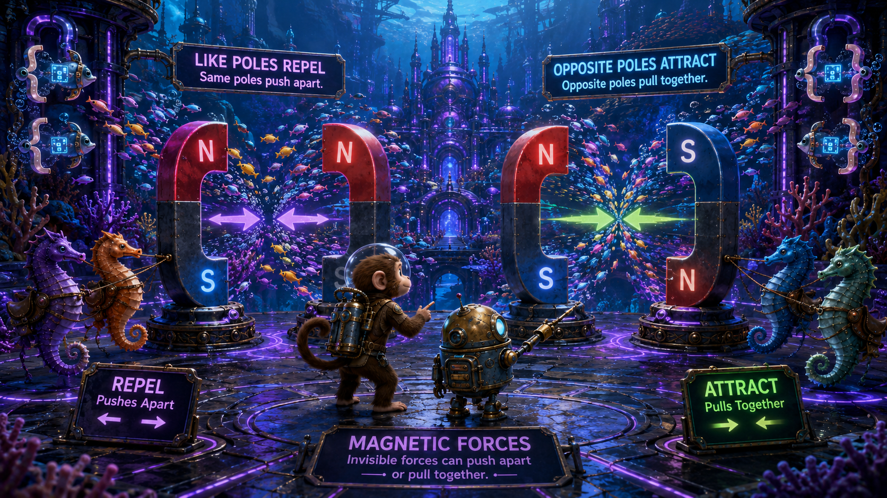

North pole
One end of a magnet is labeled north. When freely suspended, it tends to point roughly toward Earth's geographic north.
Lesson 3 · Fields in Motion
Monkey and Robot descend into a glowing underwater city where currents spiral through towers, schools of fish move like field lines, and saddled seahorses carry instruments between laboratories. Here, the invisible structure of magnetism becomes visible.
![Wide landscape educational illustration, whimsical painterly 3D
science-adventure style. Monkey and a compact brass-and-blue Robot
arrive at an immense underwater city built from black stone, violet
glass, coral arches, and glowing purple conduits. Colorful schools of
fish stream through the city like magnetic field lines. Saddled
seahorses wait at a transit platform, and small piranhas shaped like
curly braces { } carry glowing data symbols between towers. Rainbow
purples, cyan highlights, deep black water, bioluminescent lighting,
strong visual storytelling, no border, no watermark, 16:9 landscape.](./images/em_lesson3_image01.png)
Every ordinary magnet has two interacting ends called poles.
One end of a magnet is labeled north. When freely suspended, it tends to point roughly toward Earth's geographic north.
The opposite end is labeled south. North and south are always found together in ordinary magnets.
Like poles repel, while opposite poles attract—similar to electric charge, but with an important difference: isolated magnetic poles have not been observed in ordinary materials.
What happens when two north poles are brought together?
They repel each other.
Monkey asks, “Can I cut away the south pole?” Robot replies, “Cutting the magnet gives you two smaller magnets—each with both poles.”

A magnetic field describes how magnetism is distributed through space.
Outside a bar magnet, magnetic field lines are drawn from the north pole toward the south pole.
Closely packed field lines represent a stronger field. The field is usually strongest near a magnet's poles.

Are magnetic field lines physical strings in space?
No. They are a visual model used to show direction and relative field strength.
Where is the field around a bar magnet usually strongest?
Near its north and south poles.
Compasses, magnetic door switches, speakers, electric motors, and many position sensors all depend on magnetic fields.
Michael Faraday used field lines to reason about magnetic influence before the field concept was expressed in modern mathematical form.
Materials respond to magnetic fields in different ways.
Iron, nickel, cobalt, and some alloys can respond strongly and may retain magnetization.
Some materials are weakly attracted to an external magnetic field, but the effect disappears when the field is removed.
All materials show some diamagnetism. In diamagnetic response, the induced effect opposes the applied field.
Why does a magnet strongly attract an iron nail but not most plastic?
Iron is ferromagnetic and can develop strongly aligned magnetic regions. Most plastics do not respond strongly to ordinary magnetic fields.
Some materials behave like a school of fish that quickly turns in formation. Others barely adjust their direction at all.
Ferromagnetic materials contain many tiny regions that can align.
Domains point in many directions, so their magnetic effects mostly cancel when viewed across the whole object.
Many domains become aligned, producing a stronger net magnetic field.
![Split-scene educational illustration inside an underwater research
hall. On the left, hundreds of tiny colorful fish face random
directions inside a transparent iron block, representing unaligned
magnetic domains. On the right, the fish align into neat purple
and cyan schools, creating a strong glowing field around the
block. Monkey directs the fish with flags while Robot records the
alignment. Saddled seahorses carry instruments; curly-brace data
piranha { } move readings into a black glass console. 16:9
landscape.](./images/em_lesson3_image04.png)
Why may heating or striking a magnet weaken it?
Heat or mechanical disturbance can disrupt domain alignment, reducing the material's net magnetization.
Monkey says, “The fish did not disappear—they lost formation.” Robot answers, “Exactly. The material remains, but the alignment changes.”
Moving electric charge produces magnetism.
Current in a straight conductor creates circular magnetic field lines around the wire.
The right-hand rule relates conventional current direction to the direction of the surrounding magnetic field.
Increasing current strengthens the magnetic field around the conductor.

What happens to the magnetic field if current increases?
The magnetic field becomes stronger.
What shape does the magnetic field have around a straight wire?
It forms concentric circles around the conductor.
In 1820, Hans Christian Ørsted observed a compass needle move near a current-carrying wire, revealing a direct connection between electricity and magnetism.
Every energized wire produces a magnetic field, although ordinary circuit currents often create fields too weak to notice without an instrument.
Coiling a wire concentrates and strengthens its magnetic field.
A coil of wire carrying current creates a field similar to that of a bar magnet, with identifiable north and south ends.
Placing iron inside the coil can greatly strengthen the field because the core's domains align.
An electromagnet can be switched, strengthened, weakened, or reversed by controlling the current.

Name two ways to strengthen an electromagnet.
Increase the current, add more turns to the coil, or use a suitable ferromagnetic core.
Monkey asks, “So this magnet has a control input?” Robot replies, “Yes. Current is the command that creates the field.”
A magnetic field can redirect moving charge.
A charged particle moving through a magnetic field can experience a force perpendicular to both its motion and the field.
Because current consists of moving charge, a conductor carrying current can be pushed by an external magnetic field.
Can a stationary charge experience ordinary magnetic force?
Not from the magnetic part of the force alone. Magnetic force depends on the charge's motion relative to the field.
A moving curly-brace piranha crossing a current can be swept sideways. A motionless one remains where it is.
A motor converts electrical energy into mechanical motion.
Current passes through a coil or conductor placed inside a magnetic field.
Magnetic forces act on different sides of the coil, producing a turning effect called torque.
Motor design repeatedly changes or redirects current so the turning force continues.

What energy conversion takes place in an electric motor?
Electrical energy is converted into mechanical motion.
What produces torque in a simple motor?
Magnetic forces acting on different parts of the current-carrying coil create a turning effect.
Fans, pumps, hard drives, power tools, washing machines, elevators, and electric vehicles all rely on motors.
Lesson 4 can reverse the story: instead of current creating magnetism, changing magnetism can create voltage. That is electromagnetic induction.
The essential ideas connecting magnets, current, and motion.
What is the central link between electricity and magnetism?
Moving electric charge creates magnetic fields.
What practical device uses magnetic force to create motion?
An electric motor.